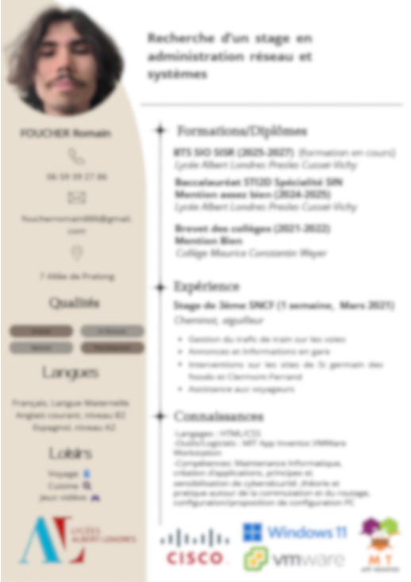
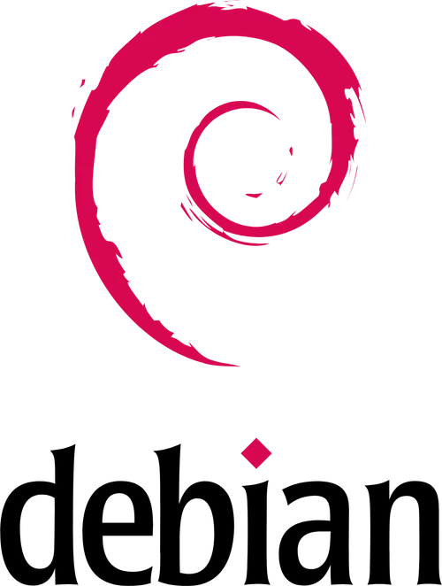
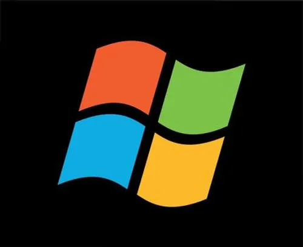

Foucher Romain
Je suis en SISR
A propos de moi

MON CV
Je m'appelle Romain Foucher, j'ai 18 ans et j'effectue un BTS SIO en spécialité SISR.
Ce BTS représente pour moi une porte vers la vie active et une bonne suite d'étude.
- Pourquoi ce BTS et cette spécialité ? J'ai fais un suivi d'étude orienté sur l'innovation technologique et ai souhaité continué sur la voie informatique concentré sur une partie gestion réseau pour en apprendre plus sur ce qui entoure et forme le domaine informatique.
- Quel type de métier je vise plus tard ? Plus tard je me vois gérer des infrastructures réseaux et faire de la maintenance informatique, donc un technicien Systèmes et Réseaux
- Quel type de parcours scolaire est le plus adapté pour enchaîner sur le BTS SIO ? Personnellement je considère le BTS accessible au personne ayant eu un suivi scolaire aux alentours de l'informatique,de mon côté j'ai effectué une seconde générale et par la suite ai fait un baccalauréat technologique en STI2D en SIN.
BTS SIO
Le Brevet de Technicien Supérieur aux Services Informatiques aux Organisations (BTS SIO), s'adresse à ceux qui souhaitent se former en deux ans aux métiers d'administrateur réseau ou de développeur. Pour par la suite intégré directement le marché du travail ou continuer des études.
Il offre donc deux options différentes :
Option SISR — Ma spécialité
Formation aux réseaux et infrastructures informatiques. Débouchés :
- Administrateur systèmes et réseaux
- Informaticien support et déploiement
- Pilote d'exploitation
- Support systèmes et réseaux
- Technicien d'infrastructure
- Technicien de production
- Technicien micro et réseaux
Option SLAM
Formation au développement logiciel et applicatif. Débouchés :
- Développeur d'applications informatiques
- Développeur informatique
- Analyste d'applications ou d'études
- Analyste programmeur
- Programmeur analyste
- Programmeur d'applications
- Responsable des services applicatifs
- Technicien d'études informatiques
Certifications et Diplômes
Ci-dessous vous trouverez une liste de mes diplômes et certifications post et pre BTS
Certification Cisco
Voluptatum deleniti atque corrupti quos dolores et quas molestias excepturi sint occaecati cupiditate non provident
Learn MoreDiplôme du brevet des collèges
Minim veniam, quis nostrud exercitation ullamco laboris nisi ut aliquip ex ea commodo consequat tarad limino ata
Learn MoreDiplôme du Baccalauréat
Bac Technologique STI2D SIN, mention Assez Bien, 2025, Lycée Albert Londres.
Learn MoreCertification Pix
Excepteur sint occaecat cupidatat non proident, sunt in culpa qui officia deserunt mollit anim id est laborum
Learn MoreLes Outils avec lesquels j'ai travaillé
VISUAL STUDIO

LINUX

WINDOWS

GITHUB
VMWARE
PACKET TRACER
Mes Projets
Ci-dessous vous trouverez les projets effectués au cours de ma première années et par la suite celle de tout mon cursus
- Tout
- 1ère Année
- 2ème Année
RECHERCHES METIERS / REDACTION CV / MAIL MOTIVE / ENTRETIEN
APPEL D'OFFRES PC FIXES & PORTABLES
MISE EN PLACE D'UN RESEAU POSTE A POSTE
PREPARATION MISE EN RESEAU D'UNE SALLE
CONCEPTION ET REALISATION D'UN SITE WEB
CREATION D'UN PORTFOLIO
CREATION D'UNE CLE YUMI
REFONTE RESEAU BROCKER'INFO COMMUTATION-ROUTAGE
Mes Stages
Stage 1ère Année
2026 — 18 mai au 19 juin
À compléter...
Stage 2ème Année
2027
À compléter...
Mes Contacts
Sous n'importe quelles demandes voici comment me contacter
Localisation
03300 Cusset
Numéro de téléphone
06 59 39 27 86
foucherromain886@gmail.com